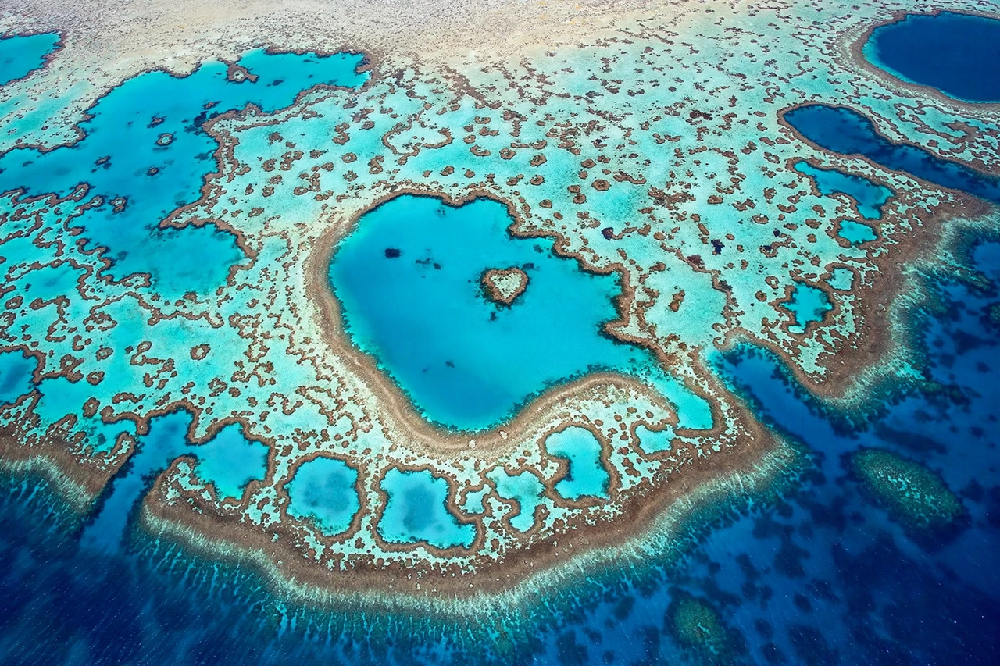

Great Barrier Reef
| Great Barrier Reef | |
|---|---|
| Location | Coral Sea, off Queensland, Australia |
| Extent | About 2,300 km; about 344,000 km²; roughly 2,900 individual reefs |
| Status | UNESCO World Heritage Site (1981); world's largest living structure |
The Great Barrier Reef is the world's largest coral reef system, composed of over 2,900 individual reefs and 900 islands stretching for over 2,300 kilometres over an area of approximately 344,400 square kilometres. The reef is located in the Coral Sea, off the coast of Queensland, Australia, separated from the coast by a channel up to 160 km wide. It is the world's biggest single structure made by living organisms, visible from outer space, and supports an extraordinary diversity of life — roughly 1,500 species of fish, 400 of hard coral, sea turtles, dugongs, whales and seabirds.

Threats and protection
The reef is protected by the Great Barrier Reef Marine Park (established 1975) and listed as a World Heritage Site, but it is under severe pressure. Mass coral bleaching events driven by marine heatwaves — notably 1998, 2002, 2016, 2017, 2020, 2022 and 2024 — have killed large areas of coral; the back-to-back 2016–17 events killed about half the shallow-water corals in the northern two-thirds. Other threats include crown-of-thorns starfish outbreaks, runoff of sediment and nutrients from agriculture, and coastal development. Climate change is the overarching driver, and UNESCO has repeatedly debated listing the reef as "in danger". Conservation bodies track the reef's species using the IUCN Red List alongside dedicated reef monitoring.